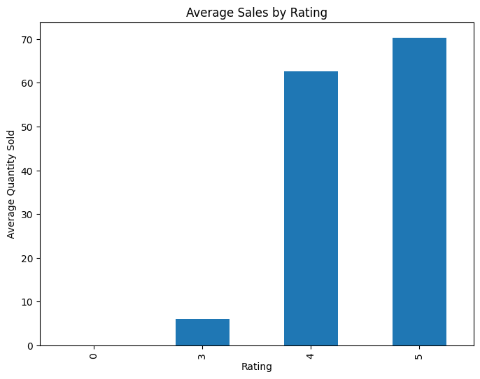
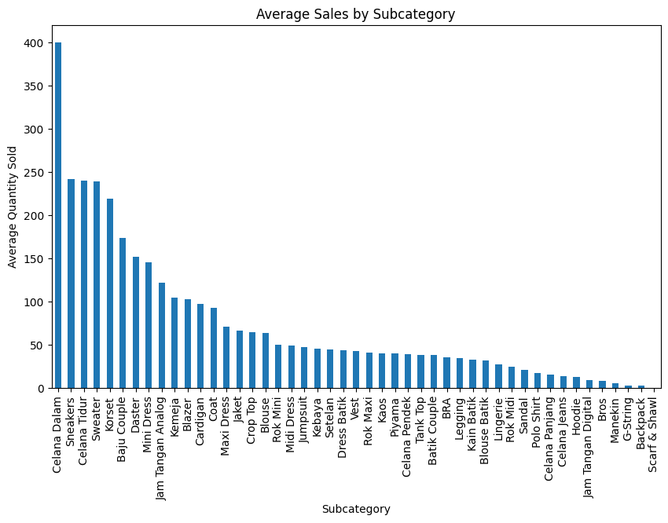
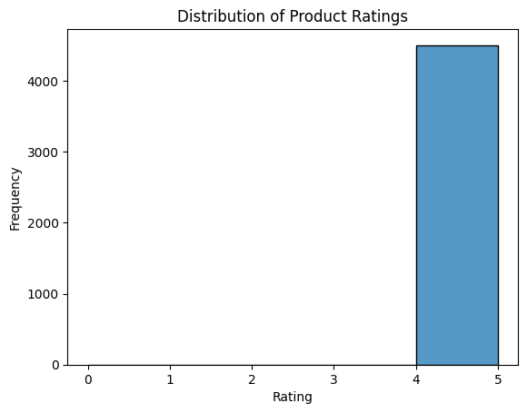
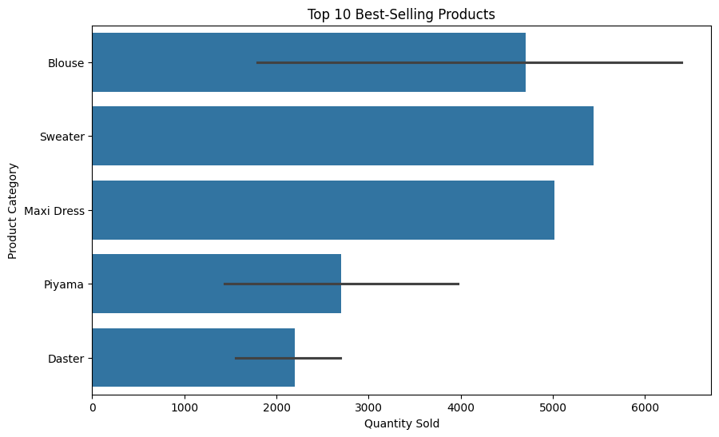
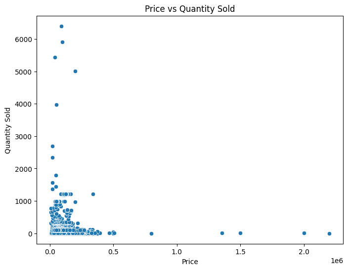
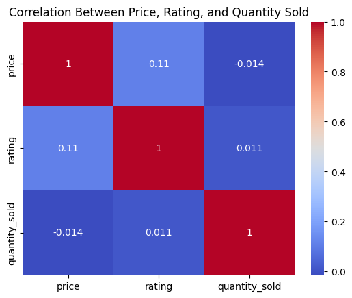

In this project, we aim to uncover actionable insights from BukaPedia's
extensive e-commerce dataset using advanced machine learning techniques. The
primary goal is to address the critical business question: "How can
BukaPedia maintain product quality while simultaneously increasing
profitability?"
To achieve this, we will identify key factors influencing product performance
and sales through data-driven analysis, exploring relationships between
product attributes, customer feedback, and purchasing patterns. By
implementing and evaluating various machine learning algorithms, we will
provide strategic recommendations to optimize product offerings and drive
sustainable business growth.
Identify Outliers
# Calculate Z-scores
df[ 'z_score' ] = (df[ 'quantity_sold' ] - df[ 'quantity_sold' ].mean()) / df[ 'quantity_sold' ].std()
# Identify outliers
outliers_z = df[(df[ 'z_score' ] > 3 ) | (df[ 'z_score' ] < -3 )]
outliers_z
We’ll identify outliers on data using z-score. There are 98 data outliers. High Ratings: All listed outliers have a rating of 5, indicating that they are likely high-quality products. This could mean that their high sales performance is driven by customer satisfaction. Sales Volume: The quantity_sold values for some of these products are significantly higher than others, indicating exceptional sales performance. Pricing: The prices of the products vary, with some being relatively low, which might contribute to their high sales volume despite being in a saturated category.
Average sales by rating
Average sales by category
Distribution Product
Best Selling Product
Price vs Quantity Sold
Correlation
Encoding
Converts data formats in the form of objects into data that can be read by the system.
df[ 'jumlah_view' ] = label_encoder.fit_transform(df[ 'jumlah_view' ])
# Handle missing values
data = df.dropna(subset=[ 'price' , 'rating' , 'quantity_sold' ])
# One-hot encode 'subcategory'
encoder = OneHotEncoder(sparse_output=False)
subcategory_encoded = encoder.fit_transform(data[[ 'subcategory' ]])
# Convert the encoded categories into a DataFrame
subcategory_encoded_df = pd.DataFrame(subcategory_encoded, columns=encoder.get_feature_names_out([ 'subcategory' ]))
# Concatenate the encoded subcategories with the original data
df = pd.concat([data.reset_index(drop=True), subcategory_encoded_df], axis=1)
Add New Feature
Added new columns to improve model accuracy and performance.
df[ 'revenue' ] = df[ 'price' ] * df[ 'quantity_sold' ]
df[ 'log_revenue' ] = np.log1p(df[ 'price' ] * df[ 'quantity_sold' ])
# Analyze how effectively the product generates revenue from each view
# Replace jumlah_view 0 with 1
df[ 'jumlah_view_adjusted' ] = df[ 'jumlah_view' ].apply(lambda x: x if x > 0 else 1)
# Calculate Revenue per View with jumlah_view_adjusted
df[ 'Revenue_per_View' ] = df[ 'revenue' ] / df[ 'jumlah_view_adjusted' ]
# Calculate production cost or cost per unit
# Assume the cost of each product is 70% of the selling price
df[ 'cost' ] = df[ 'price' ] * 0.7 * df[ 'quantity_sold' ]
# Calculate how much profit is generated from the sale of a product compared to its price
df[ 'Profit_Margin' ] = df.apply(lambda row: ((row[ 'revenue' ] - row[ 'cost' ]) / row[ 'revenue' ]) * 100 if row[ 'revenue' ] > 0 else 0, axis=1)
Model Selection
This case uses a regression model because the main goal is to predict a quantitative variable, namely the number of sales (quantity sold), based on various attributes such as price, product subcategory, and rating. Regression models are suitable for use when we want to understand and predict the relationship between independent variables (e.g. price, subcategory) and dependent variables that are continuous numerical (number of sales).
Feature and Target Variable
X = df[[ 'price', 'rating', 'Revenue_per_View', 'Profit_Margin', 'revenue', 'quantity_sold' ] + list(subcategory_encoded_df.columns)]
y = df[ 'log_revenue' ]
Split Data
Separating the dataset into train data and test data, with an 80% ration ratio for trains.
Linear Regression
model = LinearRegression()
# Train the model
model.fit(X_train, y_train)
y_pred = model.predict(X_test)
# Calculate MSE and R-squared
mse = mean_squared_error(y_test, y_pred)
r2 = r2_score(y_test, y_pred)
print( f"Mean Squared Error: {mse} " )
print( f"R-squared: {r2}")
Random Forest Regression
model = RandomForestRegressor(n_estimators=100, random_state=42)
# Train the model
model.fit(X_train, y_train)
y_pred = model.predict(X_test)
# Calculate MSE and R-squared
mse = mean_squared_error(y_test, y_pred)
r2 = r2_score(y_test, y_pred)
print( f"Mean Squared Error: {mse} " )
print( f"R-squared: {r2} " )
- Sales Performance by Subcategory:
- Blouse is the highest-selling subcategory with a total of 78,927 units sold across 1,240 products, averaging 63.65 units per product.
- Sweater also performs well, with a total of 41,879 units sold, averaging 239.31 units per product.
- Subcategories like Mini Dress, Celana Tidur, and Sneakers have high average sales per product, suggesting strong demand.
- Correlation Between Price, Discount, and Sales:
- The correlation between price and quantity sold is slightly negative (-0.014), suggesting that price may not have a strong impact on sales.
- There is no significant data available for discounts, which might indicate that discounts are not widely used in this dataset.
- Impact of Ratings on Sales:
- Products with a rating of 5 have the highest average sales (70.31 units), followed by products with a rating of 4 (62.68 units).
- Lower ratings (3 and below) correlate with significantly fewer sales, emphasizing the importance of maintaining high product ratings for better performance.
- Focus on High-Performing Subcategories: Prioritize subcategories like Blouses, Sweaters, and Dresses, which consistently show high sales. Consider expanding these product lines or introducing new variations to capitalize on their demand.
- Improve Product Ratings: As high ratings are directly linked to better sales, it's essential to ensure customer satisfaction through improved quality checks, customer feedback loops, and product enhancements for low-rated items.
- Price Sensitivity Analysis: Since price doesn't have a strong negative correlation with sales, you could experiment with slight price increases in popular subcategories to maximize profits without significantly impacting demand.
- Evaluate the Role of Discounts: Since there's limited data on the use of discounts, consider introducing targeted promotions or discounts in underperforming categories to boost sales. Full project